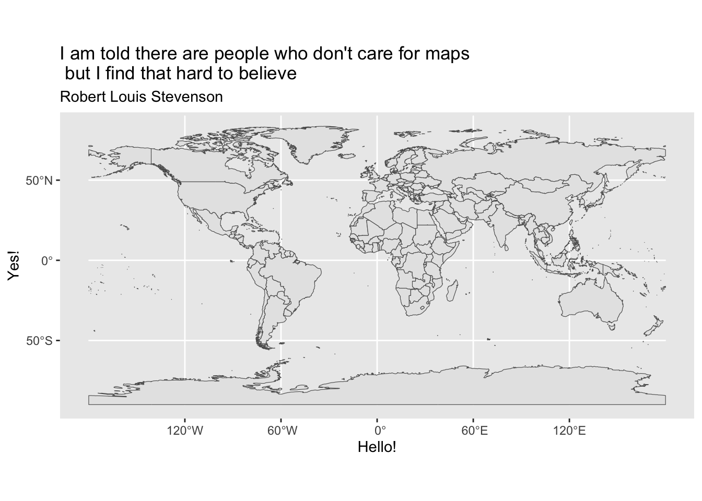
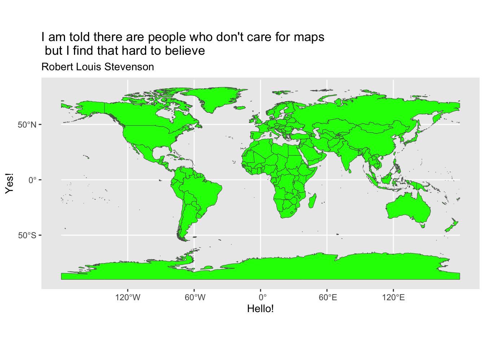
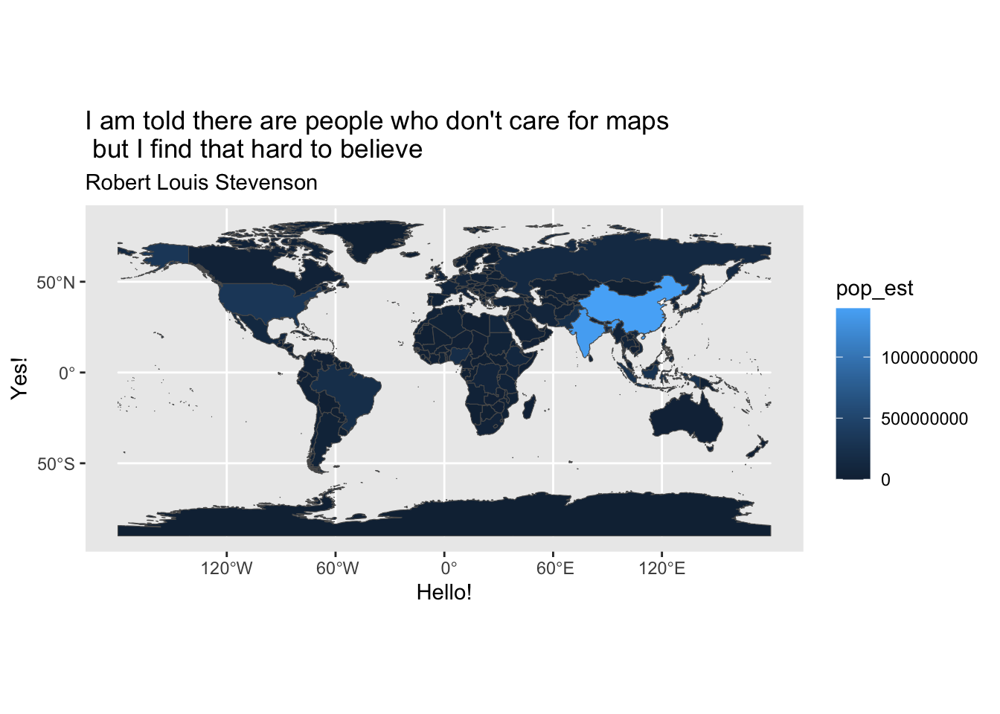
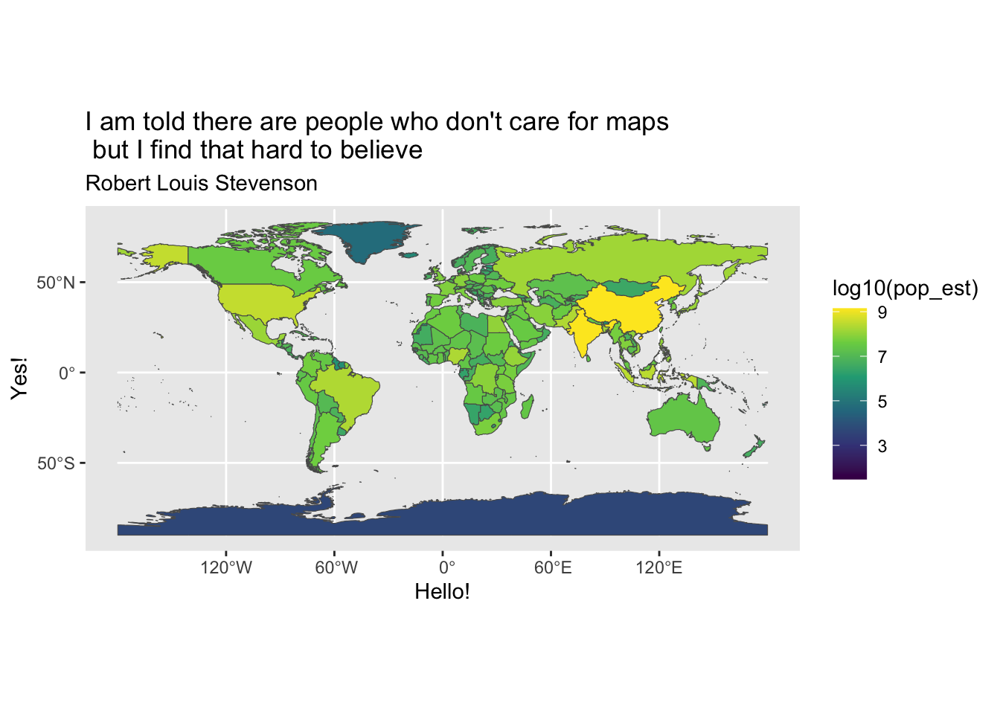
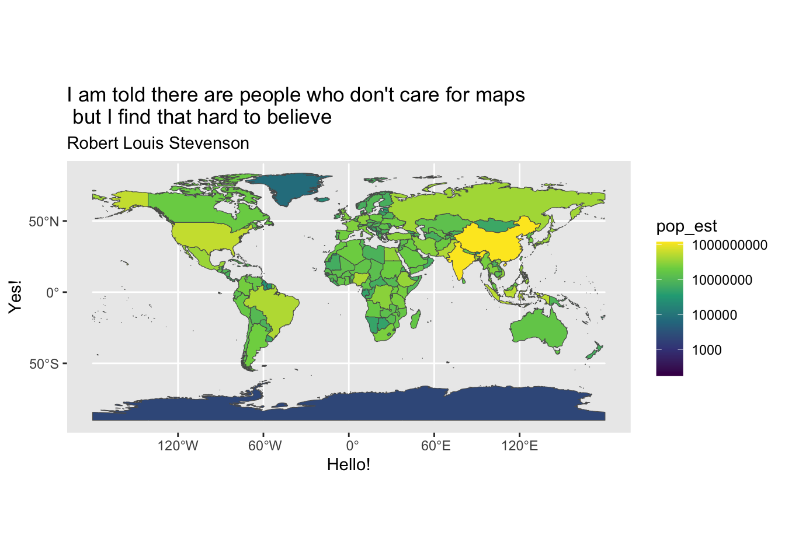

For your final project, we’ll include some cartographic visualization.
Background, sf objects …
Simple Features (officially Simple Feature Access) is a set of standards that specify a common storage and access model of geographic features made of mostly two-dimensional geometries (point, line, polygon, multi-point, multi-line, etc.) used by geographic databases and geographic information systems. It is formalized by both the Open Geospatial Consortium (OGC) and the International Organization for Standardization (ISO). - Wikipedia en.wikipedia.org/wiki/Simple_Features
Does ggplot2 stuff work? Change the labs to longitud and latitude
last_plot() +labs(x ="Hello!",y ="Yes!",title ="I am told there are people who don't care for maps \n but I find that hard to believe",subtitle ="Robert Louis Stevenson")

Does set fill color work? Change the color that’s provided to one of your choosing
last_plot() +aes(fill =I("green"))

Does mapping fill color work?
last_plot() +aes(fill = pop_est)

Do scale adjustments work? Change the scale to another one that you prefer, (cividis, inferno, magma, plasma)
Here we might also want to adjust color taking the log…
last_plot() +aes(fill = pop_est |>log10())

Here is another approach
last_plot() +aes(fill = pop_est) +# back to 'straight' mappingscale_fill_viridis_c(transform = scales::log10_trans())
Scale for fill is already present.
Adding another scale for fill, which will replace the existing scale.
Warning in scale_fill_viridis_c(transform = scales::log10_trans()): log-10
transformation introduced infinite values.

Part II. get your WDI data… map it?
Step 1 A. get data w/ WDI package
library(WDI)wdi_binding <-WDI(country="all", indicator=c("TM.TAX.TCOM.BC.ZS"),start=1996, end=1996, # choose a single yearextra = T)head(wdi_binding)
country iso2c iso3c year TM.TAX.TCOM.BC.ZS status
1 Afghanistan AF AFG 1996 NA
2 Africa Eastern and Southern ZH AFE 1996 NA
3 Africa Western and Central ZI AFW 1996 NA
4 Albania AL ALB 1996 NA
5 Algeria DZ DZA 1996 NA
6 American Samoa AS ASM 1996 NA
lastupdated region capital
1 2026-04-08 Middle East, North Africa, Afghanistan & Pakistan Kabul
2 2026-04-08 Aggregates
3 2026-04-08 Aggregates
4 2026-04-08 Europe & Central Asia Tirane
5 2026-04-08 Middle East, North Africa, Afghanistan & Pakistan Algiers
6 2026-04-08 East Asia & Pacific Pago Pago
longitude latitude income lending
1 69.1761 34.5228 Low income IDA
2 Aggregates Aggregates
3 Aggregates Aggregates
4 19.8172 41.3317 Upper middle income IBRD
5 3.05097 36.7397 Upper middle income IBRD
6 -170.691 -14.2846 High income Not classified
country iso2c iso3c year binding status lastupdated
1 Afghanistan AF AFG 1996 NA 2026-04-08
2 Albania AL ALB 1996 NA 2026-04-08
3 Algeria DZ DZA 1996 NA 2026-04-08
4 American Samoa AS ASM 1996 NA 2026-04-08
5 Andorra AD AND 1996 NA 2026-04-08
6 Angola AO AGO 1996 NA 2026-04-08
region capital longitude
1 Middle East, North Africa, Afghanistan & Pakistan Kabul 69.1761
2 Europe & Central Asia Tirane 19.8172
3 Middle East, North Africa, Afghanistan & Pakistan Algiers 3.05097
4 East Asia & Pacific Pago Pago -170.691
5 Europe & Central Asia Andorra la Vella 1.5218
6 Sub-Saharan Africa Luanda 13.242
latitude income lending
1 34.5228 Low income IDA
2 41.3317 Upper middle income IBRD
3 36.7397 Upper middle income IBRD
4 -14.2846 High income Not classified
5 42.5075 High income Not classified
6 -8.81155 Lower middle income IBRD
Step 2. A. declare reference data
######### in console: remotes::install_github(EvaMaeRey/ggregions)######library(ggregions)# set up - declare your regions of interest with unique identifiersworld_ref_data <- world |>select(sovereignt, iso_a3, iso_a2, geometry)world_ref_data
Simple feature collection with 242 features and 3 fields
Geometry type: MULTIPOLYGON
Dimension: XY
Bounding box: xmin: -180 ymin: -89.99893 xmax: 180 ymax: 83.59961
Geodetic CRS: WGS 84
First 10 features:
sovereignt iso_a3 iso_a2 geometry
1 Zimbabwe ZWE ZW MULTIPOLYGON (((31.28789 -2...
2 Zambia ZMB ZM MULTIPOLYGON (((30.39609 -1...
3 Yemen YEM YE MULTIPOLYGON (((53.08564 16...
4 Vietnam VNM VN MULTIPOLYGON (((104.064 10....
5 Venezuela VEN VE MULTIPOLYGON (((-60.82119 9...
6 Vatican VAT VA MULTIPOLYGON (((12.43916 41...
7 Vanuatu VUT VU MULTIPOLYGON (((166.7458 -1...
8 Uzbekistan UZB UZ MULTIPOLYGON (((70.94678 42...
9 Uruguay URY UY MULTIPOLYGON (((-53.37061 -...
10 Federated States of Micronesia FSM FM MULTIPOLYGON (((162.9832 5....